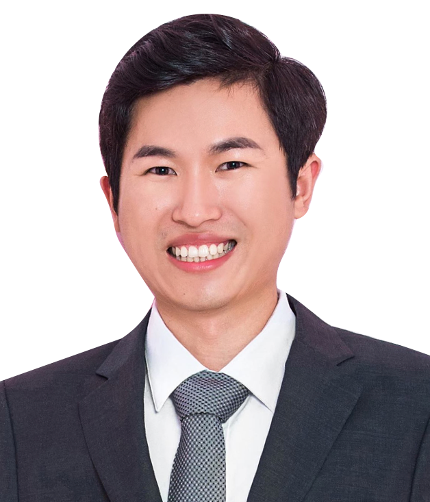

<div class="cardbox" >
	<div class="card" >
		 <div class="cardphoto" >
			  
		</div>
		
		<div class="cardintro" style="height: 23.75em;">
			<p style="font-size: 1.8em;margin-block-start: 0;margin-block-end:0">何明全
				<br>
				<h4 style="margin-block-start: 0;margin-block-end:0;">Mingquan He</h4>
			<!-- <b></b>用以加粗文本 -->
			<p style="font-size:1.5em;text-align: left;"><b>简介：</b></p>
			<!-- &nbsp添加空白字符 -->
			<p style="font-size:1.3em; position: relative;left:1em;text-align: left;text-indent: 1em;">
				现重庆大学物理学院百人计划研究员，硕士、博士生导师。
				本科毕业于重庆大学物理系；10-14年，香港科技大学物理学博士；14-15年，香港科技大学物理系博士后；2015-2017年，卡尔斯鲁厄理工学院固体物理所（德国）博士后。</p>
			<p style="font-size:1.5em;text-align: left;"><b>主要研究方向：</b></p>
			
			<div style="position: relative;left:1em;">
			<p style="font-size:1.3em;text-align: left;">1.探索低纬超导材料的新奇特性，如超导纳米线陈列，超导纳米薄膜等
			<!-- <br>表示一个换行符 <br></br>插入一个空白行 -->
			<br>2.强关联电子体系的非常规超导特性，如铜基、铁基超导体中的向列相
			<br>3.搜寻拓扑超导体系中可能存在的马约拉费米子
			</p>
			</div>
		</div>

		


		<div>
				<p style="font-size:1.5em"><b>主持及参与科研项目:</b></p>
				<p style="font-size:1.3em;position: relative;left:1em">
					1.国家自然科学基金青年科学基金项目，向列超导体Nb<sub>x</sub>Bi<sub>2</sub>Se<sub>3</sub>的应力调控及弹性模量研究
					<br>&nbsp&nbsp&nbsp2020/1-2022/12，主持
					<br>2.中央高校基本科研业务费，薄膜量子自选液体材料的电、磁场及应力调控研究
					<br>&nbsp&nbsp&nbsp2020/1-2021/12，主持
				</p>
			<p style="font-size:1.5em;"><b>代表性文章:</b></p>
			<p style="font-size: 1.3em;position: relative;left:1em">
				1. <a class="links" href="https://journals.aps.org/prl/abstract/10.1103/PhysRevLett.124.257601" style="color: blue;">"Electronic Nematicity in URu2Si2 Revisited", Liran Wang; <b style="color: black;">Mingquan He</b>; Frédéric Hardy; Dai Aoki; Kristin Willa; Jacques Flouquet and Christoph Meingast. <b style="color: #000000;">Phys. Rev. Lett</b> - Published on 26 June 2020</a>
				<br>
				2. <a class="links" href="https://pubs.rsc.org/en/content/articlelanding/2019/RA/C9RA06539C#!divAbstract" style="color: blue;">"First-principles study of vanadium carbides as electrocatalysts for hydrogen and oxygen evolution reactions", Jing Wan ; Congcong Wang; Qian Tang; Xiao Gu and <b style="color: black;">Mingquan He</b>. <b style="color: black;">Croyal Society Of Chemistry</b> - Published on 15 November 2019</a>
				<br>
				3. <a class="links" href="https://iopscience.iop.org/article/10.1088/1361-648X/ab14c3" style="color: blue;">"Quasi-2D superconductivity in FeTe<sub>0.55</sub>Se<sub>0.45</sub> ultrathin film", Fangdong Tang; Peipei Wang; Peng Wang; Yuan Gan; G D Gu; Wei Zhang; <b style="color: black;">Mingquan He</b> and Liyuan Zhang. <b style="color: black;">Journal of Physics</b> - Published on 23 April 2019</a>
				<br>
				4. <a class="links" href="https://journals.aps.org/prb/abstract/10.1103/PhysRevB.99.035157" style="color: blue;">"Calorimetric evidence of nodal gaps in the nematic superconductor FeSe", Frédéric Hardy; <b style="color: black;">Mingquan He</b>; Liran Wang; Thomas Wolf; Peter Schweiss; Michael Merz; Maik Barth; Peter Adelmann; Robert Eder; Amir-Abbas Haghighirad and Christoph Meingast. <b style="color: black;">Phys. Rev. B</b> - Published on 29 January 2019</a>
				<br>
			</p>
		</div>

		<div>
			<p style="font-size: 1.5em"><b>自11年为止在《ACS Nano》、《Nature Communications》、《Physical Review B》、《Physical Review Letters》等期刊上发表SCI论文20余篇，SCI他引次数500次<br>H-Index:12</b></p>
		</div>
		<div>
			<p style="font-size: 1.5em"><b>联系方式:</b></p>
			<p style="font-size:1.3em;text-indent: 1em;">Email: mingquan.he@cqu.edu.cn</p>


		</div>
	 </div>
</div>